Ultimate Comics Spider-Man (2011 - 2013)
| Comic Book | Release Date | Cover |
|---|---|---|
| Ultimate Comics Spider-Man #1 All-New Ultimate Spider-Man |  | |
| Ultimate Comics Spider-Man #2 Who is Miles Morales? | 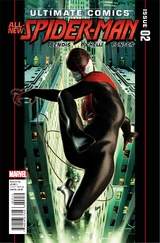 | |
| Ultimate Comics Spider-Man #3 To Be or Not to Be... Spider-Man! | 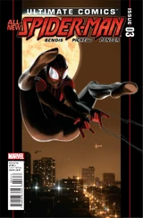 | |
| Ultimate Comics Spider-Man #4 What Would Peter Do? | 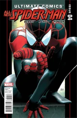 | |
| Ultimate Comics Spider-Man #5 The Boy Who Would Be Spider-Man! | 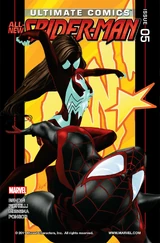 | |
| Ultimate Comics Spider-Man #6 Prowler: Part 1 | 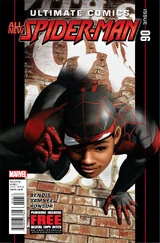 | |
| Ultimate Comics Spider-Man #7 Prowler: Part 2 | 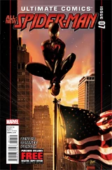 | |
| Ultimate Comics Spider-Man #8 Prowler: Part 3 | 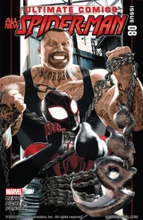 | |
| Ultimate Comics Spider-Man #9 Prowler: Part 4 | 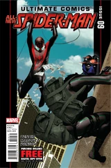 | |
| Ultimate Comics Spider-Man #10 Prowler: Part 5 | 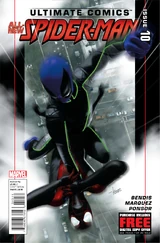 | |
| Ultimate Comics Spider-Man #11 Prowler: Part 6 | 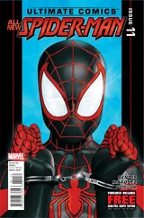 | |
| Ultimate Comics Spider-Man #12 Prowler: Part 7 | 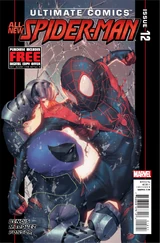 | |
| Ultimate Comics Spider-Man #13 Divided We Fall (Part One) | 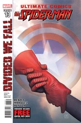 | |
| Ultimate Comics Spider-Man #14 Divided We Fall (Part Two) | 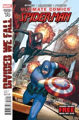 | |
| Ultimate Comics Spider-Man #15 United We Stand (Part 1) | 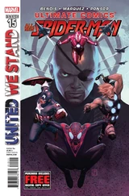 | |
| Ultimate Comics Spider-Man #16 United We Stand (Part 2) | 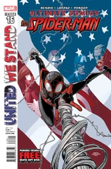 | |
| Ultimate Comics Spider-Man #16.1 Point One | 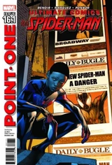 | |
| Ultimate Comics Spider-Man #17 United We Stand: Part 3 | 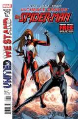 | |
| Ultimate Comics Spider-Man #18 United We Stand (Part 4) | 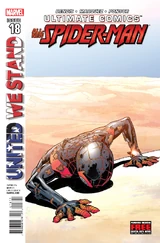 | |
| Ultimate Comics Spider-Man #19 Venom War (Part 1) | 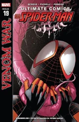 | |
| Ultimate Comics Spider-Man #20 Venom War (Part 2) | 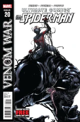 | |
| Ultimate Comics Spider-Man #21 Venom War (Part 3) | 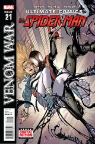 | |
| Ultimate Comics Spider-Man #22 Venom War (Part 4) | 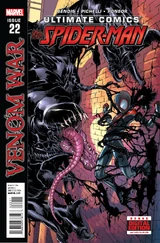 | |
| Ultimate Comics Spider-Man #23 Spider-Man No More (Part 1) | 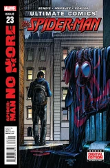 | |
| Ultimate Comics Spider-Man #24 Spider-Man No More: Part 2 | 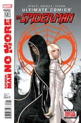 | |
| Ultimate Comics Spider-Man #25 Spider-Man No More: Part 3; The Spider Returns? | 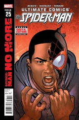 | |
| Ultimate Comics Spider-Man #26 Spider-Man No More: Part 4; Ultimate Amazing Fantasy #14 - Here Comes... Bombshell | 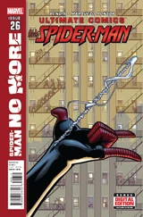 | |
| Ultimate Comics Spider-Man #27 Spider-Man No More: Part 5; Hello, Roxxon! | 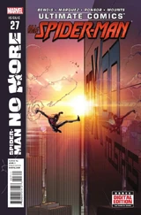 | |
| Ultimate Comics Spider-Man #28 Spider-Man No More: Part 6; Conclusion | 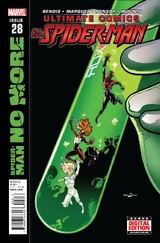 |